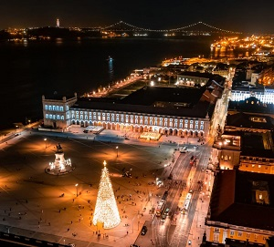

Lisboa

- Introdução
- Local
- Multimedia
- Info
- Home
Localização
Geografia de Lisboa
Origem: Wikipédia, a enciclopédia livre.
Localizada na margem direita do estuário do Tejo, a 38º42' N e a 9º00' W, com altitude máxima na Serra de Monsanto (226 metros de altitude), Lisboa é a capital mais ocidental da Europa. Fica situada a oeste de Portugal, na costa do Oceano Atlântico.
Os limites da cidade, ao contrário do que ocorre em grandes cidades, encontram-se bem delimitados dentro dos limites do perímetro histórico. Isto levou à criação de várias cidades ao redor de Lisboa, como Loures, Odivelas, Amadora e Oeiras, que são de facto parte do perímetro metropolitano de Lisboa. Mais recentemente, a sul do Tejo, mas pertencentes já ao distrito de Setúbal, Almada, Seixal e Barreiro são também casa para a expansão urbanística de Lisboa em particular após 1974, beneficiando da proximidade ao centro nevrálgico de Lisboa, embora com uma identidade claramente distinta da existente a norte do Tejo.[2][3]
O centro histórico da cidade é composto por sete colinas, sendo algumas das ruas demasiado estreitas para permitir a passagem de veículos. A cidade serve-se de três funiculares e um elevador (Elevador de Santa Justa). A parte ocidental da cidade é ocupada pelo Parque Florestal de Monsanto, um dos maiores parques urbanos da Europa, com uma área de quase 10 km².